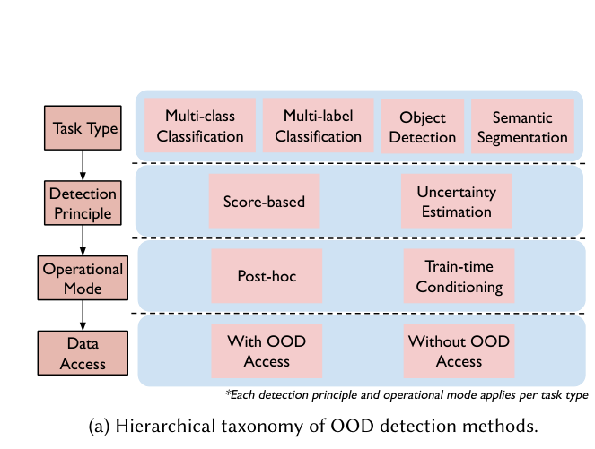

AI RESEARCH EXPLORATION · WEEK 01
OOD
Detection
연구 탐색 프로젝트 · 첫 구현 계획
202544030 이현서 · 2026.11.04
CONTENTS
목차
01
연구 관심사의 변화
02
OOD Detection 소개
03
Survey와 프로젝트 목표
04
첫 구현 방법과 다음주 목표
RESEARCH DIRECTION
응용 문제 해결에서 방법론 연구로
PREVIOUS PROJECT
응용 문제 해결
Pediatric Chest X-ray Classification
모델 학습 · 성능 비교
판단 근거 분석
→
CURRENT INTEREST
방법론 연구
Robust & Reliable Learning
일반화 · 신뢰성
기존 방법의 한계 · 개선
첫 탐색 주제:
OOD Detection
BACKGROUND
OOD Detection이란?
TRAINING
고양이 · 강아지
두 클래스만 학습
→
→
PREDICTION
고양이? 강아지?
기존 클래스 중 하나를 예측할 수 있음
ID · In-Distribution
학습 데이터와 같은 분포에서 온 입력
OOD · Out-of-Distribution
학습 데이터 분포에서 벗어난 입력
OOD Detection =
학습 범위 밖의 입력을 구분하는 문제
LITERATURE REVIEW
이번 주에 읽기 시작한 Survey
Out-of-Distribution Detection
in Computer Vision
A Comprehensive Survey and Research Challenges
OOD 탐지 방법의 분류
기존 접근의 한계와 연구 과제

Sayyed et al. (2026), Figure 1(a)
PROJECT GOAL
Survey를 바탕으로 진행할 프로젝트
대표적인 OOD 탐지 방법을 직접 구현하고 비교
01 · SELECT
방법 선정
Survey · 선행연구
02 · REPRODUCE
구현 · 비교
동일 조건 · 탐지 성능
03 · ANALYZE
한계 분석
실패 사례 · 발생 조건
목표:
어떤 조건에서 탐지 방법이 실패하는지 파악
FIRST BASELINES
먼저 구현할 방법: MSP와 Energy
Post-hoc ·
학습된 분류기의 출력으로 OOD 점수를 계산하는 접근
01 · SOFTMAX-BASED
MSP
Maximum Softmax Probability
가장 높은 예측 확률을 점수로 사용
MSP(x) = maxk p(k | x)
낮은 MSP → OOD 가능성
02 · LOGIT-BASED
Energy
Energy-Based Score
Softmax 이전 logit들의 크기를 반영
E(x) = −T log Σk exp(fk(x)/T)
높은 Energy → OOD 가능성 (일반적인 설정)
METHOD SELECTION
왜 이 두 방법부터 시작할까?
01
대표적인 기준선
후속 방법과 비교할 출발점
02
추가 학습 불필요
기존 분류기에 바로 적용 가능
03
점수 계산의 차이
최대 Softmax 확률 vs logit 기반 Energy
같은 분류기를 사용해
점수 계산 방식에 따른 차이부터 확인
NEXT WEEK
다음주 목표
01
분류기 · 데이터 준비
CIFAR-10 · OOD 평가 데이터
02
MSP · Energy 구현
동일 분류기에서 점수 계산
03
기초 비교 결과 정리
AUROC · 점수 분포 · 실패 사례
다음 발표:
구현 코드와 첫 비교 결과
AI RESEARCH EXPLORATION · WEEK 01
감사합니다
OOD Detection · Survey Reading · Baseline Reproduction
202544030 이현서